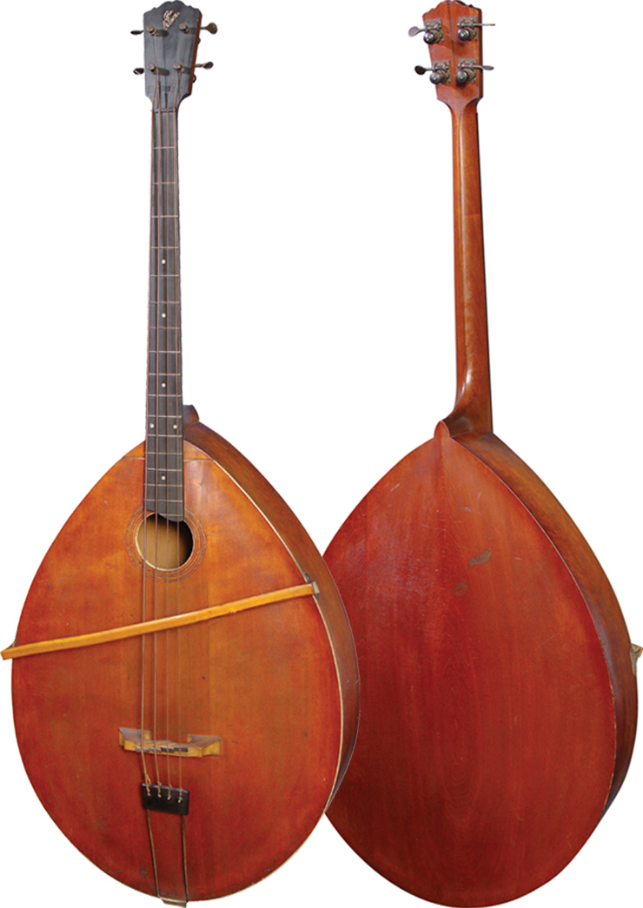
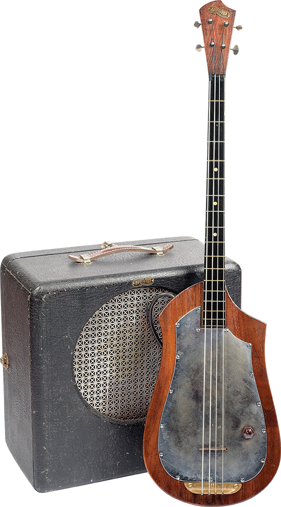
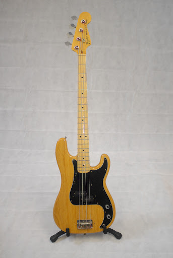
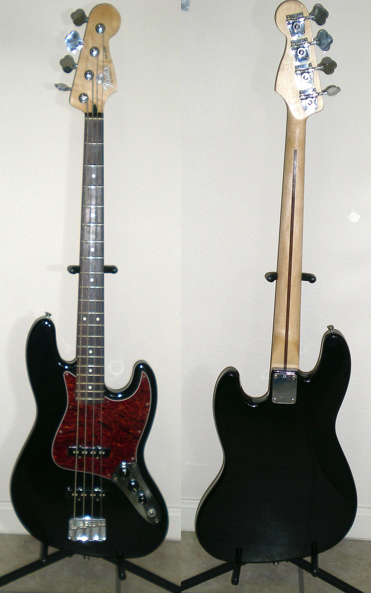

Бас-гітара (або просто бас) - струнно-щипковий музичний інструмент,
який використовується для гри в басовому діапазоні. На бас-гітарі
грають переважно пальцями, або медіатором.
Електрична бас-гітара як зовнішнім виглядом, так і конструктивно схожа
на електрогітару (відповідно, акустична бас-гітара схожа на акустичну
гітару), але має більш масивний корпус і гриф, а також більшу мензуру.
Зазвичай на бас-гітарі використовують 4 струни, але існують також
бас-гітари з більшою кількістю струн. 4-струнна бас-гітара
налаштовується по квартах від мі-контроктави, в унісон з контрабасом,
і на одну октаву нижче від 4 нижніх струн електрогітари. Як у випадку
з електрогітарою, для електричної бас-гітари потрібне підключення до
підсилювача для гри.
Починаючи зі своєї появи в 1950-х роках, бас-гітара практично повністю
замінила контрабас в поп-музиці як інструмент ритічної групи. Крім
цього, бас-гітара стала важливим елементом більшості сучасних музичних
жанрів, причому в кожному з них може бути різна техніка виконання, лад
і кількість струн.
До винаходу бас-гітари в якості основного басового інструменту виступав
контрабас - найбільший акустичний інструмент з сімейства скрипок, не рахуючи
октобаса. Цей інструмент поряд з достоїнствами володів також рядом
характерних недоліків, що ускладнюють його широке застосування в ансамблях
популярної музики початку XX століття - великі розміри, велика маса,
вертикальне підлогове виконання, відсутність ладів на грифі, короткий
сустейн, порівняно невеликий рівень гучності, а також досить важкий запис
через характеристику динамічного діапазону.
Серед винаходів того часу слід згадати бас-мандоліну Гібсон Мандо-бас
(Gibson Style J Mando bass), вироблена фірмою «Gibson» з 1912 по 1930 роки,
а також інструмент американського музиканта і підприємця Пола Тутмарка -
електронний бас Аудіовокс № 736 ( Audiovox # 736 Electronic Bass), створений
ним в 1936 році, який містить багато рис сучасної бас-гітари, наприклад,
суцільний дерев'яний корпус, горизонтальне розташування інструменту при грі
і ладові поріжки. Існує також контрабас-балалайка, але через великий розмір
її використовували (і використовують) ще рідше, ніж контрабас.


У 1951 році американський винахідник і підприємець Лео Фендер, засновник фірми
Fender, випустив бас-гітару Fender Precision Bass, розроблену ним на основі його
електрогітари Fender Telecaster. Інструмент отримав визнання і швидко завоював
популярність. Ідеї, закладені в його конструкції стали фактичним стандартом для
виробників бас-гітар, а вираз «бас фендер» на довгий час став синонімом для бас-гітари
взагалі. Пізніше, в 1960 році, Фендер випустив ще одну, вдосконалену модель
бас-гітари - Fender Jazz Bass, популярність якої не поступається Precision Bass.


З 1960-х років з появою рок-музики, бас-гітара стає все більш поширеним інструментом.
Виникають нові різновиди - з'являються електроакустична бас-гітара і безладова,
збільшується число струн, з'являються гітари з вбудованою активною електронікою,
здвоєними і троїстими струнами і без головки грифа. Розвивається також і техніка
гри на бас-гітарі - від гітари запозичується теппінг, бенд, з'являються також
специфічні басові техніки, такі як слеп і гра флажолетами.